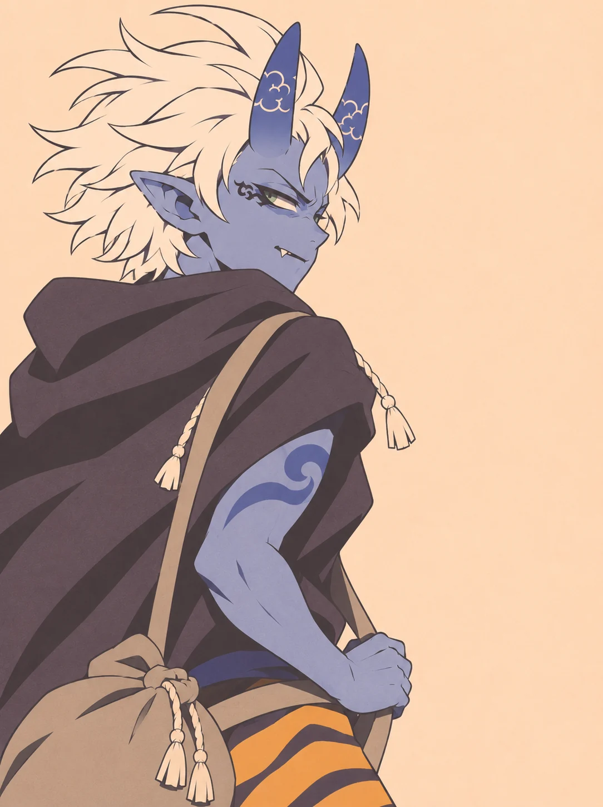
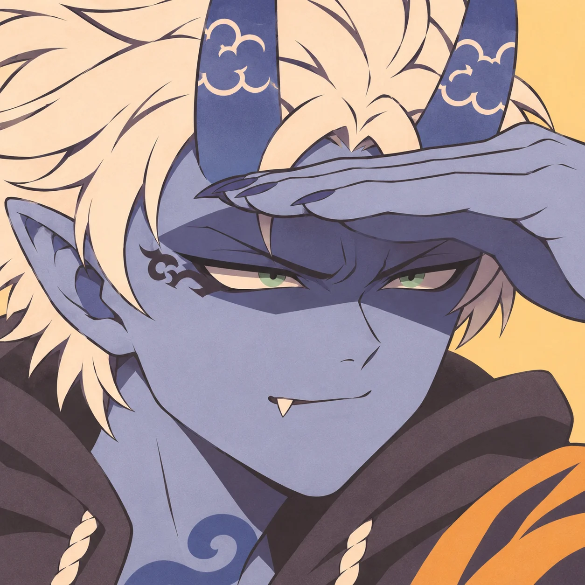
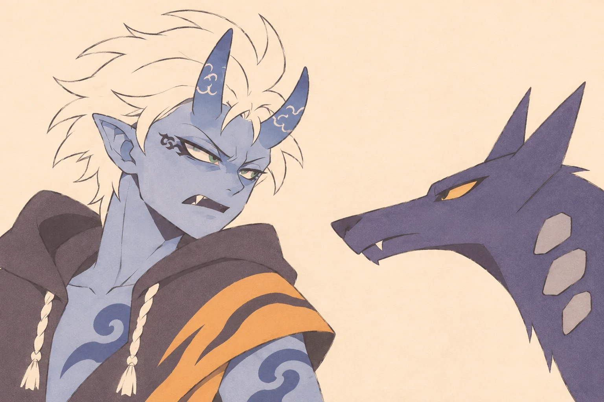
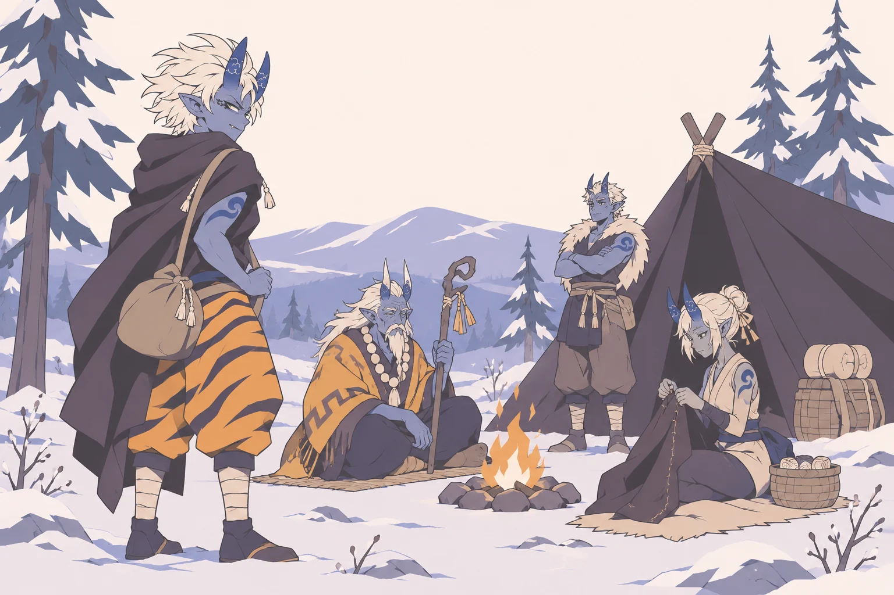

Синий демон
Соломон
«Сол» Кири
«че зыришь глаз пузыришь»
- Возраст
- 13 лет
- Рост / вес
- 168 см / 60 кг
- Раса
- Они
- Происхождение
- Верховье
- Нынешнее место
- Квестпост
- Племя
- Синие демоны

Глава первая
Лик синего демона
Соломон — атлетичный, но не особо габаритный для своего вида юноша. Он из подвида «синих» тифлингов. Теперь их вид называют «Они». Собственно, все черты, присущие его расе, есть и у Сола: кожа синяя, волосы белые, когти длинные, а сам парень, несмотря на юный возраст, часто выше своих сверстников других видов.
Сол носит традиционные наряды своего племени. Для них используют шкуры диких зверей и полотно, которое ткут племенные мастера.

Глава вторая
Нрав, острый как клык
Если уж раскрывать характер, то сразу упомяну, что наш юный синий демон — точно не простая жертва пубертата. По крайней мере, сам он так точно не считает. Как минимум потому, что не знает, что такое пубертат.
Самое главное — не обмануться миловидностью юного демона. С самого рождения он рос в условиях экстремального холода и постоянно боролся за выживание. Умение выживать и сила в племени ценятся больше всего, а потому каждый в нём приспособился к местным условиям и стал сильным хищником. Наш герой в том числе.
Кири — настоящий охотник и полноправный член племени. По своим способностям он уже не сильно отстаёт от взрослых членов общины. Благодаря развитым инстинктам и боевым навыкам его не страшит встреча с опасной тварью или иным сильным врагом.
Однако в характере нашего синего демона определённо есть и другая черта — любопытство… Оно и понятно, ведь он молодой и пронырливый. Многие вылазки бывают не очень удачными и даже опасными, а порой оказываются обычной тратой времени. Но случаются и интересные находки: то обнаружит, где обитают звери, то отыщет ещё что-нибудь любопытное.

Глава вторая · продолжение
Сила и острый язык
Кроме всего прочего, Сол сам по себе бунтарь. Авторитетов он не признаёт: у него в генах — добиваться главенства и бороться за своё положение. А отстоять его можно не только силой, но и острым языком. Впрочем, и насчёт силы юнец знает: бой с ним ни для кого не будет лёгкой прогулкой.
Он не боится сильных и всегда ставит чужую силу под сомнение, пока сам её не проверит. Ну или пока инстинкты не подскажут, что для него это билет в один конец.
Ну а ещё он слегка язвительный и хамоватый. Скорее всего, просто потому, что вырос в племени демонов. А они, как правило, не отличаются тактичностью или изворотливостью в формулировках.
Рассмотреть канабо

Глава третья
Холодные выси
Холодные выси… Где-то на вершинах, в снегах, обитает племя, которое местные боязливо зовут синими демонами. Некогда это было племя неудержимых воинов, живших в изоляции от остального мира. Своими когтями они разрывали плоть. Острыми зубами впивались в добычу, а своей дьявольской силой метали скалы. Но в какой-то момент истории старого континента они исчезли и объявились уже после катаклизма, перебравшись через далёкое море.
Говорят, верховный шаман знал о катастрофе даже раньше многих королей. Будучи духовным лидером, он повёл своё племя в новый мир, чтобы дать ему шанс на новое начало. Племя и так едва насчитывало пару десятков сородичей, а опаснейший путь пережили лишь немногие.
Но даже в новом мире их бы гнали. Вот и поселились они в лесах нынешнего Верховья, в условиях, привычных им ещё по старому миру.

Глава третья · продолжение
Среди синих демонов
Соломон родился в тяжёлое время, когда стычки с представителями других рас и с бандитами были нормой. А правители Верховья всячески притесняли демонов Они. Впрочем, и само племя было далеко не безобидным. В первую очередь они воины: своего не отдадут и в случае чего готовы драться. Стычки нередко приводили к потерям с обеих сторон, и ненависть между расами всё росла.
Однако всё было не так плохо. За дипломатию и за дела, требовавшие ума, чаще всего отвечал шаман — старейший и мудрейший в общине, её опора. Благодаря верховному шаману племя порой торговало с путниками и даже помогало им.
Сам Соломон, хоть и был удалым и даже в некоторой степени буйным, учился и у воинов, и у шаманов. У одних перенимал боевые навыки, у других учился общаться. Из-за того, как мало он знал о большом мире, Сол порой оставался наивным. Но наивность не равна глупости: к тому, что казалось ему абсурдным, он относился со скепсисом.
Несмотря на то что жизнь в племени была привычной и даже по-своему интересной, нельзя сказать, что Кири был полностью ею доволен. Юнец чувствовал, как тесен его мирок, а ему хотелось большего. Со временем он, может, и стал бы вождём своего племени, но куда охотнее достиг бы тех вершин, которых ещё не достигал ни один из его сородичей.

Глава четвёртая
Незваный гость
Поворотной точкой стала встреча с незваным гостем — обычным на вид бродягой, который по ошибке заглянул в логово целого племени демонов. Но он не испугался — наоборот, как ни в чём не бывало стащил и съел провиант, которого племени хватило бы на целую неделю, и уселся греться у местного костра.
А когда старшие проявили агрессию, бродяга за какие-то минуты раскидал их, как щенков. Последним выступил Сол. Его в этой битве буквально унизили.
Впервые в жизни демон был и подавлен, и воодушевлён. Первое — от собственного поражения, а второе — от мысли, что мир куда больше, чем он представлял, и встречаются в нём совершенно невероятные персонажи.

Глава пятая
За пределами племени
Восстановившись, наш герой собрал кое-какие пожитки и просто покинул племя, дабы изучить этот огромный, прежде неизведанный мир и однажды взять реванш у своего обидчика.
Однако долго странствовать по миру в одиночку и без средств было тяжело даже для такого умелого, хоть и небольшого воина, как Сол. После одной из драк в какой-то деревенской таверне мальчишка услышал об опорном пункте для странников и разных интересных, а главное — сильных людей. Недолго думая, он отправился в дальний путь, не зная, что ждёт его в конце.
К началу летописи ↑